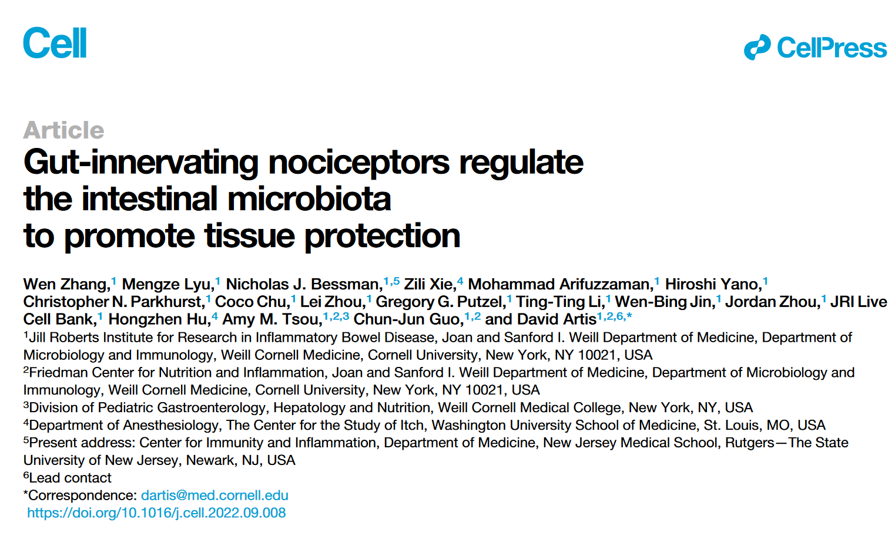
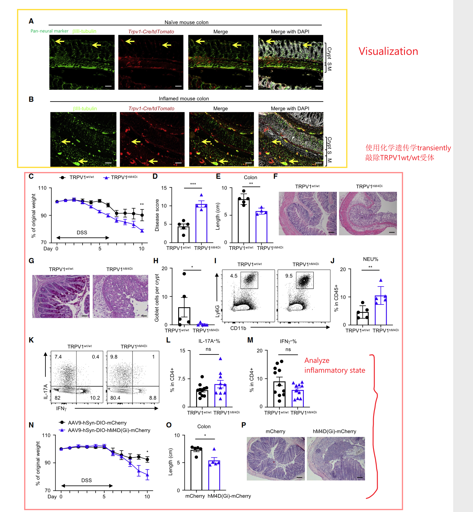
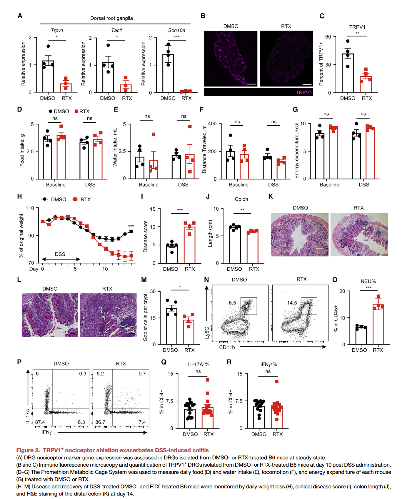
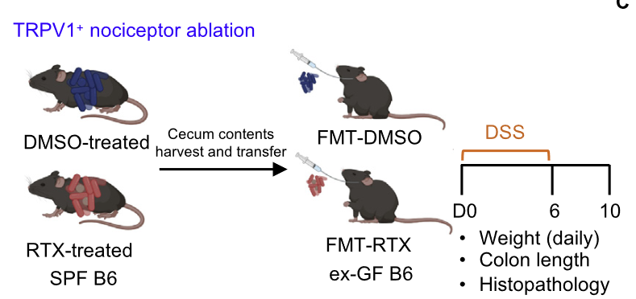
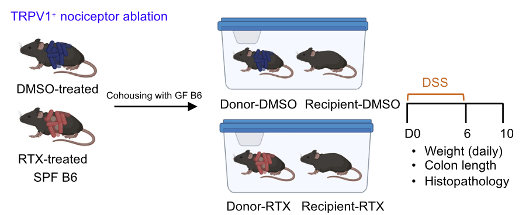
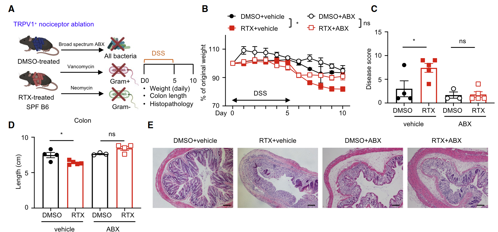
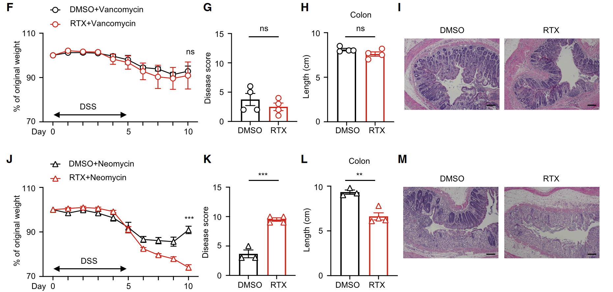
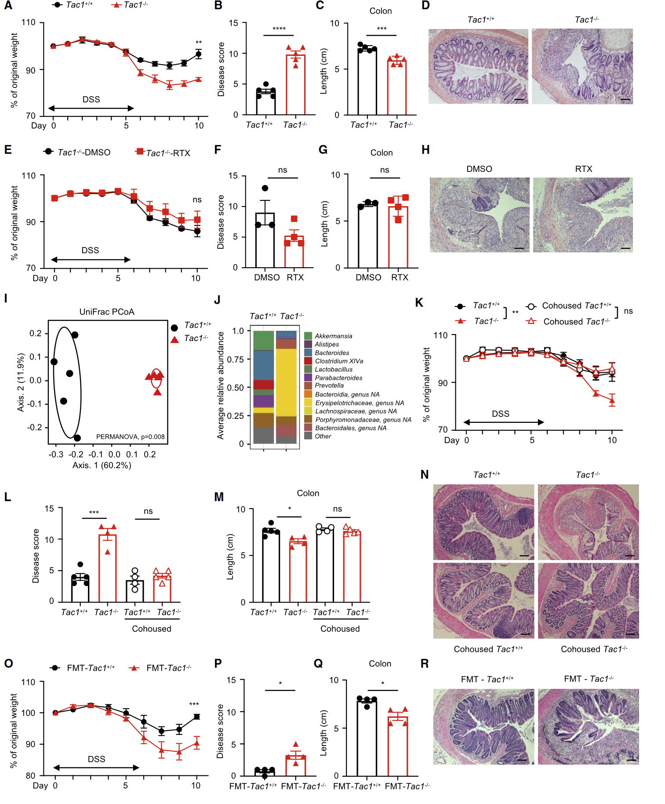
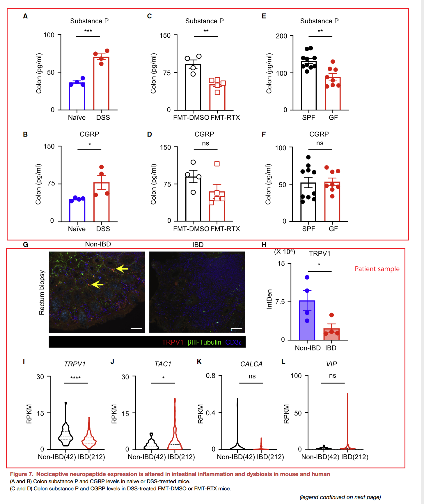

疼痛常常伴随着许多肠炎患者，在肠道、皮肤和肺中，也分布着许多痛觉神经元。它们是否对肠炎具有影响呢？这是这篇文章想要解决的问题。
敲除TRPV1+受体
 在本文的第一部分，作者首先探究了TRPV1+受体是否分布在colon上，，为此他们使用tdtomator flox小鼠与Trpv1-Cre小鼠杂交，试图标记colon上的Trpv1+受体。同时使用pan-neuronal marker βIII共染，观察疼觉受体的分布情况。接着它们运用了三种方法transiently/permanantly敲除这种受体，观察对肠道病理状况的影响。
化学遗传敲除
化学遗传学是指运用小分子药物，改变突变体蛋白质和化学药物分子的作用，来调控信号传导的技术，是神经科学中的常用技术。DREADD(Designer Receptor Exclusively Activated by Designer Drugs)是其中最常用的化学遗传学方法。通过设计一种突变型受体，使它只能与我们设计的药物结合，这样就能实现信号操控。
CNO(clozapine N-oxide)上DREADD系统中人工设计的药物，hM4Di(抑制型)和hM3Dq（激活型）是人工设计的蛋白质受体，它们都是经过特定位点突变的人源毒蕈碱型受体。随后递送抑制型配体CNO就能够短暂抑制相应的受体。
化学遗传学对动物损伤小，但是时间精度差，药物会连续几个小时起作用。
它们通过免疫荧光验证了hM4Di在dorsal root ganglia(DRG)表达。实验结果显示，当抑制hM4Di受体后并用DSS处理后，小鼠的baseline body mass, food/water intake，肠道总蠕动时间没有受到影响。但是case组小鼠的body weight loss明显增多。pathological score增多，colon长度变短，此外它的免疫细胞浸润（中性粒细胞）增加，肠道隐窝结构小时，goblet细胞数目减少。说明肠道的修复能力降低，肠道炎症表型加剧。
Cre特异性敲除
为了特异性地敲除肠道上的疼觉受体，作者注射了带有抑制型DREADD的慢病毒载体AAV9到结肠末端，然后用CNO处理小鼠，只抑制这一部分神经元，随后再进行DSS诱导结肠炎。这种处理方式看到的表型与全身抑制的结果类似(Figure1 O, N, P)。
除了诱导Loss of function，作者还尝试使用化学遗传学表达hM3Dq激活型受体，结果发现表型得到了明显回复。
药物杀死TRPV1+受体
除了短暂的使这种受体失活，作者尝试了使用皮下注射RTX，全身性地敲除TRPV1+受体，然后用DSS诱导结肠炎。探究此时肠道损伤、以及肠道炎症反应情况。
首先验证TRPV1+受体的确被敲除。结果发现，敲除TRPV1+受体后，并不影响baseline body mass，肠道蠕动时间，进食进水量。与对照组相比，实验组表现除了更加明显的weight loss，disease score增加，结肠长度变短，goblet cell数目变少。类似地，他们研究此时肠道的免疫浸润情况。结果发现，中性粒细胞的数目明显增多。与前面化学遗传学失活的结果是抑制的。 
机制探究
接着为了进一步探究为什么TRPV1+受体敲除为加剧肠道的炎症反应，他们猜想这可能与肠道菌群有关。因为之前已经有研究表明肠道菌群与免疫系统、神经系统具有crosstalk，它们能够共同调节机体的炎症状态。
首先它们对RTX/DMSO处理后的小鼠的fecal DNA进行了16S rRNA测序，结果发现使用RTX处理后肠道菌群组成发生了显著的变化。由于肠道菌群失调已知与肠道的炎症反应有关。因此作者想要探究是否是此时的肠道菌群变化影响了肠道的炎症状态。他们进行了菌群移植实验。将处理后的小鼠菌群移植到GF老鼠中。观察细菌的定植情况。随后将受体老鼠进行DSS处理。  结果发现，FMT-RTX表现出了持续的weight loss, disease score也显著升高。中性粒升高。这些结果说明当疼觉受体被敲除后，肠道菌群可能参与加剧了机体的炎症反应。作者还使用了cohouse实验验证了它们的结果。 
为了探究肠道菌群与RTX处理后产生的表型相关，作者试图使用抗生素处理，杀死细菌（ABX)。 。 并且还使用了单独的ABX处理，探究到底是哪一类细菌起到了保护作用。其中vanomycin主要清除革兰氏阳性菌，neomycin新霉素主要清除革兰氏阴性菌。结果发现当使用neomycin处理后，RTX处理后的小鼠对于DSS的敏感性增强了，结肠长度进一步降低，出现了更严重的表型，但是使用万古霉素却能够回复表型，提示革兰氏阴性菌在这其中具有一定的作用。 
为了探究肠道菌群这其中起到的是否是主要作用，作者想要探究是否诱导特定的细菌便能够加剧炎症反应。
- 分别在不同来源(vendor)的小鼠（已知携带不同的细菌）上进行RTX去除TRPV1+实验。观察表型是否有差异。
- 细菌定植实验：分别在GF小鼠上接种不同的细菌，包括the Clostridium spp. consortia (Gram+)(Atarashi et al., 2011, 2013), (2) a combination of Bacteroides thetaiotaomicron (Gram-) and Enterococcus faecium (Gram+) (Bt+Ef), or (3) altered Schaedler flora (ASF), a well-established minimal microbial consortium in mice (Schaedler and Dubos, 1962; Figure S4E
以上结果均表明当注射革兰氏阳性菌时，它对肠道的炎症反应具有抑制作用，起到了保护的作用。
接着他们想知道疼痛受体是怎么影响到肠道细菌，以及炎症反应的。作者分析了该受体的下游。当疼痛受体上的TRPV1离子通道激活后，将会释放一系列包含有疼痛神经肽的小泡。例如CGRP, 和SP。作者分析了Trpv1和Tac1在不同组织表达情况。结果发现只有Tac1(encode SP)主要在DRG区域表达。作者发现注射SP能够减弱RTX引起的肠道验证表型。并且在多种去除受体方法上都得到了验证。这些结果说明TPPV1+可能是通过释放SP来对机体起到保护作用的。作者还构建了Tac1 knockout 小鼠。结果发现Tac1敲除的小鼠对于DSS处理更加敏感。 
最后一个关键实验，当然是想要去验证P物质是否能够调控肠道菌群。作者分别对Tac1+/+和Tac1-/-小鼠的fecal DNA进行了16S rDNA测序。结果发现的它们的细菌组成明显不同。为了探究肠道菌群与P物质是否含有因果关系，作者对Tac1+/+和Tac1-/-进行了cohouse实验，检测各种表型。结果发现当Tac1-/-与Tac1+/+一起饲养后，Tac1-/-加剧的肠道验证表型得到了回补。并且使用菌群移植实验也得到了类似的结果。
此外，他们还分析了TRPV1+/+受体在机体不同状态下（肠道炎症、微生物失调）的表达水平。结果发现，它的水平与机体的状态密切相关，似乎可以作为一个marker。作者还分析了一些临床数据。 